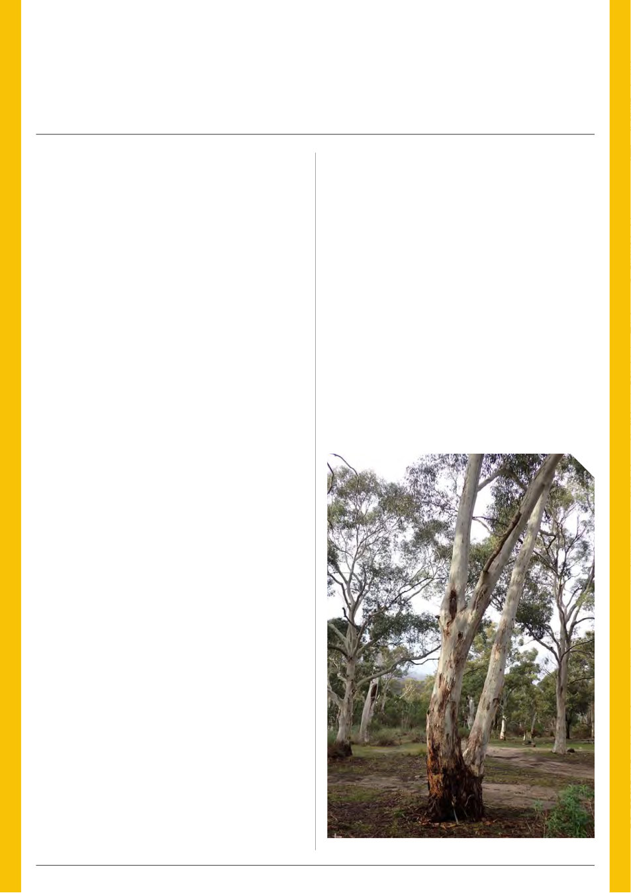

14 | Published since 1918 by the VAA – founded in 1892
It was a strong second half of the season in the Central
District, especially for ironbark, which put on its best show
for some time from early summer right through to late
autumn. A dry start to 2026 didn’t seem to impact the
honey flow greatly; however, the lack of pollen significantly
reduced brood production in late summer, leading some
beekeepers to head to the North East in search of better
breeding conditions.
Rain in March helped bring on some much-needed pollen
for those who stayed local, with a lighter budding of grey box
surprising a few of us and some prickly moses providing enough
pollen to keep colonies breeding while the bees continued bringing
in honey right up to winter.
As for wintering, it was a mixed bag from all reports. Most
who stayed in Central Vic saw a bit of pollen coming in throughout
winter, and most hives maintained some brood. We could have
used a few more sunny days amongst the rain and fog to get them
building. Anyone who shifted bees north onto the early canola, or
onto turnip in the Mallee, would likely have fared better.
This upcoming season could be an interesting one in the
Central District.
For spring, yellow gum is looking very good throughout the
region and seems to be holding onto enough buds for some spring
honey in areas. The moisture around should help give us plenty
of ground flora and other annual pollen while working the yellow
gum. Canola has started very early throughout the region and may
not hold on for long into spring, although I’ve heard the rain can
help extend the flowering time.
Red box is looking very good in most areas. There is the
odd tree starting to flower now, which is common to see, so if
you’re already working the yellow gum, it may be worth sticking
around for.
Now for the interesting part - in addition to red box, I’ve
noticed budding on green mallee, both peppermints, manna gum/
candlebark and long-leaf box. All are very unreliable in Central Vic
for honey, but many tales are told of the one-in-20 year when
someone gets a good honey flow from one of these species.
Fingers crossed the 2026–27 season is the one in 20, because
I’d say we are well overdue - so why not take the gamble? From my
understanding, the reliability of these trees can vary a lot between
different locations. At the very least, they should provide us with a
nice gap-filler or some handy pollen when needed.
Now back to the more reliable trees.
For summer, there are patches of yellow box around the place
that look good, mostly towards the southern areas of Central Vic
where it grows. The same goes for red gum, which is a surprise
considering its widespread flowering last season. Although the
areas where I’ve noticed red gum aren’t known for yielding a big
crop, it can be quite handy for some much-needed pollen if you’re
working yellow box in the same area.
I haven’t had a good look in the Pyrenees, but I didn’t need a
good look to see the blue gum buds hanging like ornaments on a
Christmas tree. It should be promising over summer as well.
For later summer and into autumn, messmate in the Wombat
is worth a closer look in each area. It appears promising along
the roadsides, although it can be a bit sparser in the forest.
Given it should be followed by manna gum, it’s likely a good
option, especially for building up strong hives.
So clearly, we have options this upcoming season in the Central
District.
On that topic, members may be aware that the Victorian
Government is currently creating several new protected areas
across Central West Victoria, including the Wombat-Lerderderg
National Park, Pyrenees National Park, Hepburn Conservation Park
and additions to Bendigo Regional Park. Most of these land tenure
changes are reported to be taking effect on 5 October 2026.
The Government has stated that existing recreational and
public land uses will continue to be supported on this public land,
and that the current apiculture policy remains in place.
However, many commercial beekeepers remain concerned
that, over time, these changes may lead to increased restrictions,
more complex approval processes, tighter access arrangements,
track closures and greater uncertainty around long-term bee site
security.
During this transition period, if beekeepers experience any
apiary site access issues or management concerns within these
new park areas, I’d like to encourage them to let us know so they
can be documented and raised through the appropriate channels.
VAA Resources Report
Central District – August 2026
By Matt Lorenz
Candlebark near Ararat, Victoria, by “ninakerr01” on inaturalist.